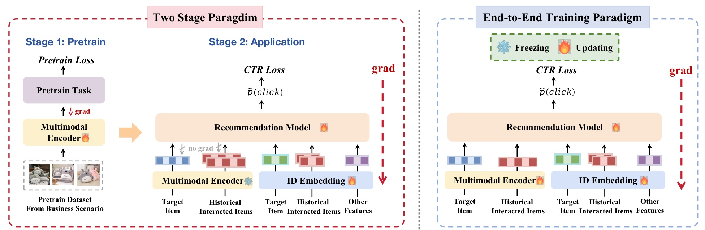
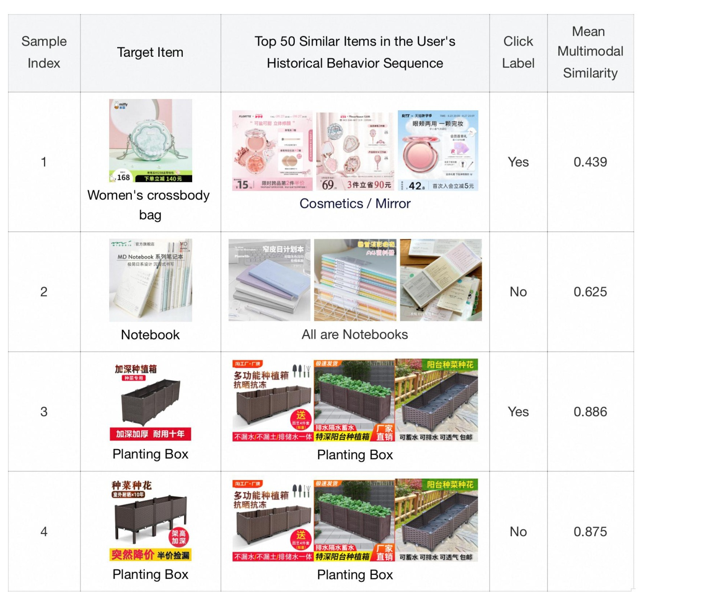
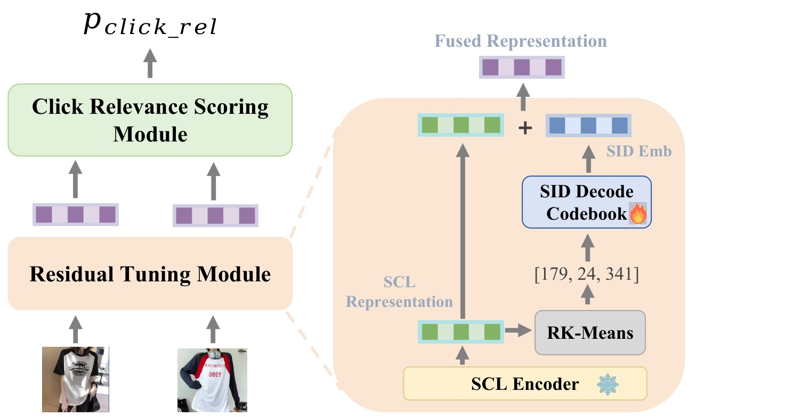
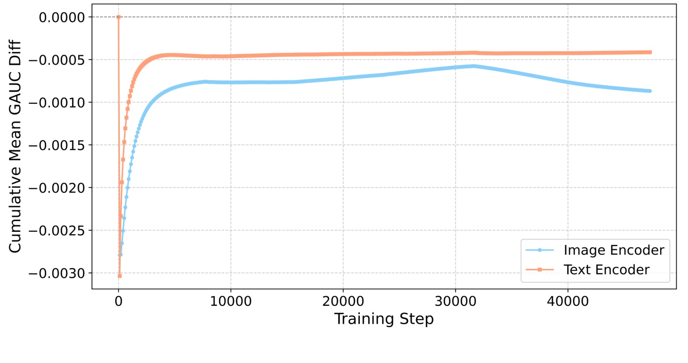
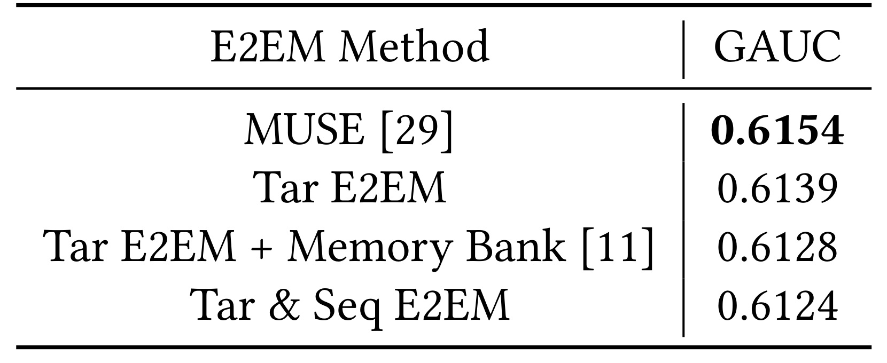
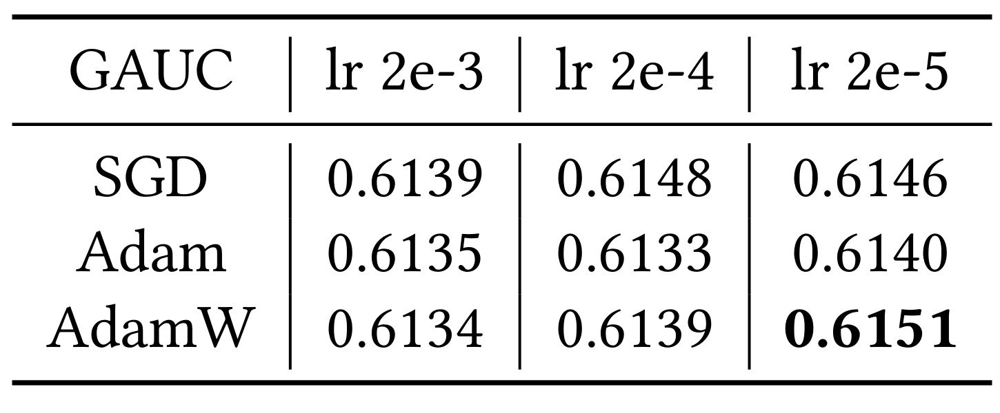
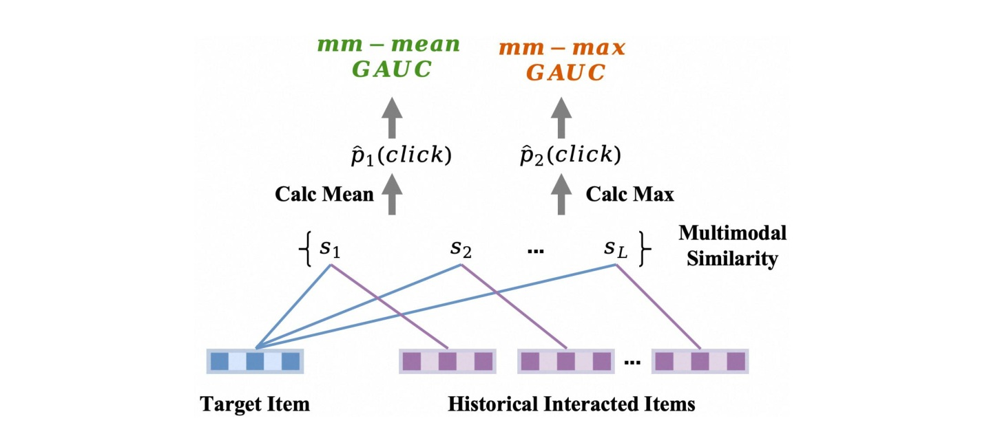
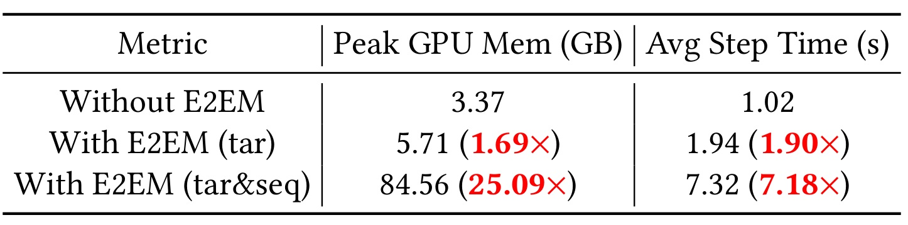
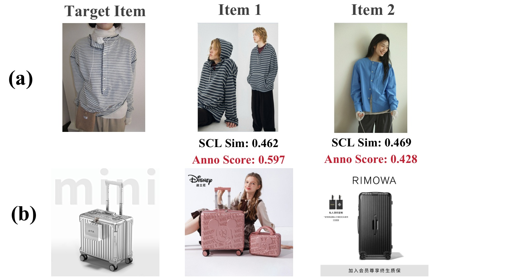
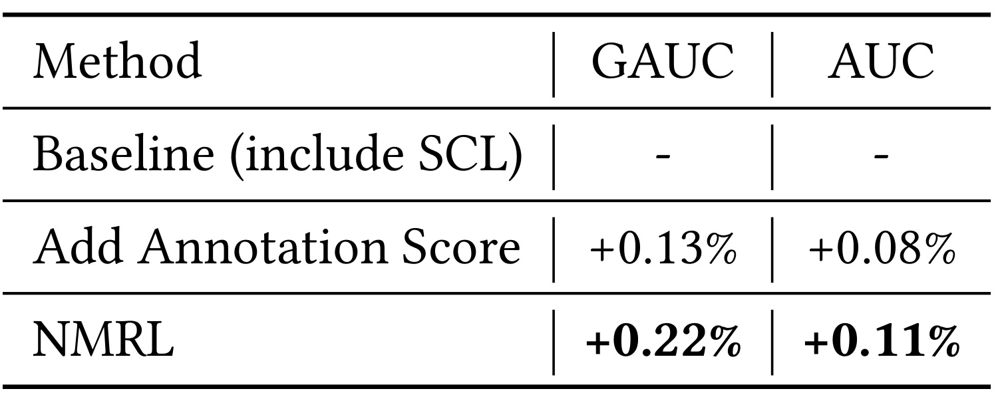

Native Multimodal Representation Learning for Click-Through Rate Prediction in E-Commerce Scenarios / 面向电商点击率预估的原生多模态表征学习
Chao Yi、Feifan Yang、Jiawei Feng、Sishuo Chen、Zhangming Chan、Xiang-Rong Sheng、Han Zhu 的这篇工作来自阿里巴巴淘宝天猫集团，一作主机构为淘宝天猫集团，合作机构包括中国科学技术大学与北京大学。论文发表于 CIKM 2026，公开版本见 arXiv:2608.24091，DOI 为 10.1145/3799682.3840096。本轮未核验到独立官方实现仓库，因此下面只依据论文正文讨论方法与实验，不把“可复现代码已开放”作为事实。
论文研究的不是“多模态特征是否有用”这一宽泛问题，而是一个更贴近工业系统的二阶问题：当业务已经拥有一个强预训练多模态编码器，并且它已给 CTR 模型带来收益时，能否继续用点击标签端到端更新编码器？作者先用大规模失败实验否定朴素方案，再提出 Mine-Then-Train：先从 CTR 数据中挖出能够由商品图文语义解释、且含有增量偏好信息的三元组，之后才微调共享编码器。
强多模态编码器与 CTR 目标存在任务和数据分布错位，但直接用原始点击标签端到端更新共享编码器并不带来增益：点击同时由内容语义、价格比较、位置偏置、误点和兴趣疲劳等因素驱动，使多模态分支收到模糊且方向不一致的监督。
1. 背景和问题
工业电商推荐长期依赖离散 ID。ID 参数对高频商品的记忆能力很强，却难以直接表达图片、标题、风格、材质等内容，也不擅长处理新商品和低频商品。已有多模态 CTR 系统一般采用两阶段路径：先在业务数据上以对比学习、掩码建模或生成任务预训练编码器，再冻结编码器，把商品图文压成多模态向量，作为额外特征交给排序模型。论文所用 SCL Encoder 建立在 Chinese CLIP ViT-B/16 上，并以业务内语义相近样本做 MoCo 式对比预训练；它不是弱基线，而是已经部署在淘宝展示广告系统、并给 GAUC 带来百分点级增量的强编码器。作者强调，在如此大规模的系统里，0.1% GAUC 提升就已被视为有说服力，因此“在强两阶段方案上还能否继续增益”比从零比较多模态与纯 ID 更苛刻。
这种两阶段路线仍有两处错位。预训练任务并非 CTR，预训练数据分布也不同于真实点击流。直觉上，把编码器接入 CTR 模型并让点击损失贯穿全链路，应该能让内容表示自动适应下游目标；论文把它称为 End-to-End Multimodal Training（E2EM）。但同一条点击标签会同时穿过 ID 分支和共享多模态分支，损失函数本身没有机制判断一次点击究竟是因为商品外观、价格、曝光位置，还是偶然行为。ID 表征按商品分配相对独立的参数，一条异常样本主要污染对应 ID；共享编码器则以同一组参数服务所有商品，一条无法由内容解释的梯度也会移动整个内容空间。于是端到端并不等于监督自动解耦。

Figure 1 左侧展示冻结式两阶段路径：预训练任务先更新多模态编码器，CTR 阶段只读取目标商品和历史商品的内容表示，CTR 梯度不再回到编码器；右侧的 E2EM 则让 CTR Loss 同时更新推荐模型、多模态编码器和 ID Embedding。真正改变的不是“有没有多模态特征”，而是原始点击梯度是否进入共享编码器。两侧都保留目标商品、历史交互商品、ID 特征和其他特征，所以后续负结果不能简单归因于少了某条输入。该图也解释了作者为何不把方案写成又一个 CTR 网络：论文关心的是监督进入表示层的方式，最终提出的 Mine-Then-Train 仍复用现有下游 CTR 结构。
作者在一周淘宝数据上直接测试 E2EM：84M 用户、88M 商品、1.9B 条点击/未点击样本，CTR 主体为生产系统中的 MUSE，内容编码器为强 SCL Encoder。结果不是“收益不显著”，而是图像与文本编码器对应的 CTR GAUC 都下降。把编码器只用于目标侧、再接历史记忆库，或扩大到目标与序列两侧，也没有改变方向。作者还试验 SGD、Adam、AdamW 及三个学习率，最好单元仍低于冻结 SCL 的 MUSE 基线。这一系列诊断把问题从“某次端到端训练没调好”推进到“原始 CTR 监督与共享内容表示之间存在结构性不匹配”。
论文进一步区分语义相似与点击偏好。用户可能为比价点击一个外观不相似的商品，也可能误点、受曝光位置影响；反过来，用户已经看过许多高度相似的花箱后，兴趣疲劳会使下一次不点击。对共享编码器而言，这些行为都以同样的二元标签出现。若强行让内容空间解释全部点击，编码器就会牺牲已经学到的细粒度商品语义去追逐非语义噪声。

Figure 3 的四个样例把这一矛盾具体化。样例 1 中目标斜挎包与历史里的化妆镜/粉盒平均相似度仅 0.439，却产生点击；样例 2 的笔记本与历史笔记本平均相似度为 0.625，却没有点击。样例 3、4 的目标和历史都为花箱，相似度分别高达 0.886 和 0.875，但点击标签一正一负。表格不能告诉我们真实因果，作者列举的比价、误点、位置偏置和疲劳也只是合理机制；它能严格支持的是：仅靠图文相似度不能唯一解释 CTR 标签。因此后续“可由多模态解释”的训练数据必须通过操作性筛选获得，而不能被当作已观测的因果标签。
这与推荐系统及大模型训练中的数据问题高度相关。一个更强的编码器未必能从更贴近业务的标签中获益，关键在标签是否和被更新的参数子空间对应。RAG 或个性化模型也常把最终点击、停留、接受率直接回传给共享语义模型；若行为同时受界面、价格、位置、时机和策略探索影响，端到端梯度同样可能破坏通用语义。本文的核心价值，是把“对齐下游”改写为“先判断哪些下游监督有资格更新哪一层表示”。它也强调了基线选择的重要性：只有先确认冻结编码器已经是强业务基线，后续负结果才能被解释为监督错配，而不是模型容量不足。
2. 方法
2.1 从共享参数脆弱性到 Mine-Then-Train 分解
论文先形式化标准两阶段过程。通用编码器 \(E\) 在业务场景数据 \(D_{\mathrm{train}}\) 上用预训练任务 \(\mathcal{T}_{\mathrm{pretrain}}\) 得到强编码器：
符号解释：\(E\) 是初始多模态编码器，\(D_{\mathrm{train}}\) 是从电商场景收集的预训练数据，\(\mathcal{T}_{\mathrm{pretrain}}\) 表示 SCL 等训练任务，\(\hat{E}\) 是已适配场景语义的编码器。这个式子明确了第一重错位：优化的是内容预训练目标，而不是点击预估。
应用阶段冻结 \(\hat{E}\)，先抽取内容表示，再与 ID 特征一同输入 CTR 模型 \(F\)：
符号解释：\(\mathrm{ItemMMInfo}\) 是商品图片与标题，\(\mathrm{MMRep}\) 是固定内容向量，\(\mathrm{IDFeat}\) 是稀疏 ID 特征，\(p_{\mathrm{CTR}}\) 为点击概率。两阶段方案的优势是训练稳定、特征可预计算；不足是编码器从未直接看到 CTR 任务。作者希望得到：
符号解释：\(D_{\mathrm{CTR}}\) 是真实点击数据，\(\mathcal{T}_{\mathrm{ft}}\) 是下游微调过程，\(\tilde{E}\) 是所谓 Native Multimodal Representation 的生成器。但式 (3) 只表达目标，没有回答哪些 CTR 样本能安全驱动 \(\hat{E}\)。Mine-Then-Train 的核心不是增加一层网络，而是把“从行为中识别可解释监督”与“更新共享内容编码器”拆成两个阶段。
为什么必须拆开？ID 特征的商品参数相对解耦，而多模态编码器完全共享参数。非语义样本对某个 ID 的错误更新通常局部化，对编码器的错误更新却可能改变所有商品的表示。作者因此不继续依赖联合损失去“软约束”噪声，而是在数据层决定哪些行为可以进入编码器微调。
2.2 残差 SID 注释模型学习可解释点击相关性
Mining 阶段先训练一个多模态注释模型。输入是一件目标商品，以及用 SCL 表示从用户历史中检索出的候选商品；两者的原始图像和标题先经冻结的 SCL Encoder编码。RK-Means 把 SCL 表示量化为三层 Semantic ID，形如 \([179,24,341]\)，再从可学习的 \(3\times8192\) SID Decode Codebook 取出残差。码本零初始化，使训练起点等于原 SCL 表示；CTR 梯度只写入 SID 残差与打分头，不直接扰动 SCL Encoder。融合表示随后进入 MLP 或归一化内积模块，输出点击相关性分数。

Figure 5 左侧是对一对商品执行的 Residual Tuning 与 Click Relevance Scoring，右侧放大单个商品的残差路径：SCL Encoder 给出绿色基础表示，RK-Means 将其映射到分层 SID，SID Decode Codebook 输出蓝色 CTR 特定残差，两者相加成 Fused Representation。雪花与火焰分别提示冻结和更新。这样设计有两层保护：第一，点击偏好被限制在语义索引对应的码本中，仍可被商品内容解释；第二，SID 查表比反向传播 ViT 编码器便宜，并保持类似 ID 参数的局部性。它不保证分数具备因果解释，只提供一种比直接更新共享编码器更受约束的行为标注器。
把注释分数直接作为 CTR 特征可带来相对 +0.13% GAUC，说明码本确实捕获到强 SCL 和既有 ID 分支之外的增量信息。但作者没有直接把它作为最终答案：注释模型仍由原始 CTR 训练，仍可能受非语义因素污染；而且偏好主要存于 SID Embedding，泛化到未充分记忆的商品受到限制。于是它更适合作为离线“矿工”，从海量样本中找高置信排序关系，再让真正读取原始图文的编码器学习。
2.3 三重筛选把 CTR 数据改造成可学三元组
对每条 CTR 样本，作者先用 SCL 表示从用户点击历史中找与目标商品最相似的 Top-K 商品，并剔除相似度低于 \(\tau_m\) 的商品对，确保候选至少有明确内容关联。共享同一目标商品的候选再组成三元组 \((\mathrm{tar},1,2)\)，只保留下式同时成立的样本：
符号解释：\(\mathrm{Sim}^{\mathrm{SCL}}\) 是原强编码器的余弦相似度，\(\mathrm{Score}^{\mathrm{Anno}}\) 是注释模型的点击相关性分数；\(\tau_s\) 限制原相似度差，避免选择 SCL 已经轻易区分的关系；\(\tau_a\) 要求注释偏好差足够大，作为伪标签置信度；前置的 \(\tau_m\) 保证每一对本身有较强语义关联。实验设置使用 \(\tau_m=0.3,\tau_s=0.05,\tau_a=0.15\)。
这三道门分别对应“可由内容解释”“不是旧表示已掌握的简单关系”“行为标注有清晰偏好”。保留样本分为两类：Rank-reversed 三元组里，SCL 原本更偏向商品 2，注释模型清晰反向选择商品 1；Gap-widened 三元组里，两者排序一致，但注释模型给出更大的偏好间隔。最终得到 3000 万高质量三元组。这里的“高质量”是基于阈值和人审抽样的操作性定义，不等同于无噪声真值。
2.4 Margin 目标与 SCL 正则联合固化 Native Representation
Train 阶段用挖出的目标—正例—负例三元组微调 SCL Encoder。首先要求目标和商品 1 的相似度至少比商品 2 高 \(m\)：
符号解释：\(\mathrm{Sim}_{\mathrm{tar},1}\) 与 \(\mathrm{Sim}_{\mathrm{tar},2}\) 都由当前正在微调的编码器产生，\(m=0.1\) 是目标排序间隔。若偏好差已经达到 0.1，该三元组不再贡献 margin 梯度；若未达到，梯度直接重排内容空间。
只优化行为排序可能遗忘原 SCL 学到的细粒度商品语义，因此同时保留对比目标：
符号解释：\(q\) 是用户查询图像或文本，\(k^+\) 是对应购买商品，\(k_0,\ldots,k_K\) 是 MoCo memory queue 中的其他商品，所有表示均做 L2 归一化，\(\tau\) 为可学习温度。它把微调限制在仍能保持原电商语义判别力的区域。最终目标为：
符号解释：两项在论文中直接相加，前者注入被筛选的点击偏好，后者维持原语义空间。作者没有报告额外权重，因此不能擅自假设可调 \(\lambda\)。训练结束后，注释模型、阈值挖掘和两项损失都不进入在线推理；系统只替换内容编码器生成的 NMR 特征，并复用既有 SCL 特征生产与 CTR 服务链路。这使方案的在线改造面小于全链路 E2EM。
3. 实验结果
3.1 直接 E2EM 的负结果是否稳健
大规模诊断先用淘宝一周数据，样本包含用户画像、目标商品类别/品牌/ID、历史点击序列，以及目标与历史商品的图像/标题。稀疏嵌入用 Adam、学习率 \(2\times10^{-3}\)；推荐模型稠密部分和多模态编码器用 AdamW、学习率 \(2\times10^{-4}\)，编码器配 cosine scheduler。作者比较从 E2EM 编码器与冻结 SCL Encoder 提取表示后，CTR 模型的累计平均 GAUC 差值。

Figure 2 的零线代表不劣于 SCL。图像编码器蓝线和文本编码器橙线从训练初期的约 -0.003 快速回升，却始终没有穿过零；橙线稳定在约 -0.0004，蓝线后期仍约 -0.0009。曲线支持“在这套强基线和训练配置中 E2EM 没有增益并造成下降”，但图中没有多随机种子误差带，不能把微小曲线差读成普适显著性。更重要的是，它让后续工作以负结果为起点：作者不是从弱预训练编码器上证明端到端有效，而是解释为什么强业务编码器会被原始点击梯度拖坏。
由于真实全量 E2EM 成本太高，作者在更轻量的 Taobao-MM 上做范围和超参数消融。MUSE 两侧都用 SCL 表示时 GAUC 为 0.6154；只更新目标侧为 0.6139，目标侧再加 LEMUR Memory Bank 为 0.6128，目标和序列都端到端为 0.6124。

Table 1 的降幅随更新范围扩大而加重，说明“让更多多模态输入参与端到端”没有释放更多 CTR 信息，反而扩大了受噪声梯度影响的表征面。Memory Bank 也未挽救结果，意味着问题不能只归因于历史表示不足。从数值上看，目标侧 E2EM 已比基线低 0.0015 GAUC，再加记忆库降低 0.0011，扩到目标与序列两侧又降 0.0004；这个排序与“共享编码器触及的噪声样本越多，损害越大”相容。当然，这仍是单一业务基准上的有序现象，不能推导所有序列 CTR 架构都会单调恶化。

Table 2 覆盖 SGD、Adam、AdamW 与 \(2\times10^{-3},2\times10^{-4},2\times10^{-5}\) 三档学习率。最佳是 AdamW、\(2\times10^{-5}\) 的 0.6151，仍低于 0.6154 基线；其余单元在 0.6133–0.6148。该表排除了“论文只试了一个明显不合适的优化器或步长”这一简单反驳，但搜索网格仍有限，不能宣称所有训练技巧都无效。作者还尝试在 CTR loss 之外加入 SCL loss，CTR GAUC 相对不加 SCL 又降 0.17 个百分点，SCL Top-1 Accuracy 相对原编码器下降 5 个点，说明额外语义约束也没有回答“当前样本该不该更新编码器”。
3.2 语义归因、梯度一致性与计算成本
为量化点击能否仅由内容相似解释，作者把目标商品与历史点击商品的 SCL 相似度取均值或最大值，直接作为预测分数计算 GAUC。

Figure 4 说明这不是另一个训练后的 CTR 模型：对历史中的 \(s_1,\ldots,s_L\) 做 Calc Mean 得到 \(\hat p_1(\mathrm{click})\)，或做 Calc Max 得到 \(\hat p_2(\mathrm{click})\)。Table 3 报告 MultiModal-Mean GAUC 为 0.541、MultiModal-Max GAUC 为 0.536，只略高于随机水平 0.5。它证明纯内容相似无法解释相当一部分行为，却不意味着多模态信号无用；相反，SCL 已在生产基线中带来收益。严格结论是 CTR 标签混合了内容可解释与不可解释因素。
作者冻结编码器参数以控制变量，测量 E2EM 联合训练时最后一层 Transformer 的梯度。Avg Sim 1 是同一 batch 内样本梯度的平均余弦相似度，Avg Sim 2 是相邻 batch 平均梯度的余弦相似度。Table 4 中，SCL 的两项分别为 0.144 和 0.849；E2EM 仅为 0.016 和 0.006。尤其跨 batch 一致性从 0.849 降到 0.006，说明 CTR 梯度方向极不稳定。该诊断与性能下降同向，但仍是相关证据：它没有逐样本识别真实噪声来源，也没有证明低相似度是唯一因果机制。
计算代价构成第二个独立障碍。batch 大小为 \(B\)、历史长度为 \(N\) 时，在目标与序列两侧端到端编码需要每步处理 \(B(N+1)\) 份图像/文本。作者以 \(B=32,N=50\)、CLIP ViT-B/16 和 MUSE 测量峰值显存与平均 step 时间。

Table 5 中，冻结特征方案为 3.37 GB、1.02 秒；只在目标侧 E2EM 增至 5.71 GB（1.69 倍）和 1.94 秒（1.90 倍）；目标与序列全开则达到 84.56 GB（25.09 倍）和 7.32 秒（7.18 倍）。这组数字解释了为何作者不能在生产规模上反复探索大量 E2EM 变体，也说明 Mine-Then-Train 的工程吸引力不只来自精度：昂贵的编码器更新被移到离线，线上继续消费预计算内容向量。成本比值绑定当前模型、序列长度和硬件环境，不能直接外推到所有多模态 CTR 栈。
3.3 挖掘标签是否真的包含增量偏好
作者首先做人工评估。在 SCL 相似度差小于 0.05 的条件下，抽取 1000 个注释分差大于 0.15 的高置信三元组，以及 1000 个分差小于 0.05 的低置信三元组。多名标注者通过多轮投票判断用户点击目标商品后更可能点击 Item 1 还是 Item 2，以多数票为真值。高置信组 Item 1 胜率为 85%，低置信组仅 42%，支持 annotation-score margin 作为伪标签质量指标。论文未披露标注者人数、一致性系数、商品类目分层或置信区间，因此只能把它视为阈值有效性的抽样验证。

Figure 6(a) 中，目标连帽条纹上衣与 Item 2 的 SCL 相似度 0.469 略高于 Item 1 的 0.462，但注释分数把 Item 1 评为 0.597、Item 2 评为 0.428；作者认为匹配的条纹图案比“同为无帽、领口相近”的轮廓更影响点击。(b) 中，SCL 认为 Item 1 的 0.443 略高于 Item 2 的 0.415，注释模型把差距扩大到 0.521 对 0.366，作者解释为行李箱尺寸比竖纹材质更关键。案例展示了 rank reversal 和 gap widening，却也暴露一个边界：所谓“更重要属性”来自模型与作者解释，并非经过反事实实验确认的点击因果。
3000 万三元组的规模说明筛选并未把数据压缩到不可训练，但论文没有披露原始候选总量、各阈值的保留率、类目分布与时间分布。若高置信样本集中在服饰箱包等视觉强类目，NMR 对文本驱动、价格驱动或长尾类目的增益可能不同。复现时需要同时记录覆盖率与质量，而不是只复用三个阈值。
3.4 离线提升与在线 A/B 的证据边界
最终离线实验使用淘宝展示广告系统一个月 CTR 数据，强基线已包含 SCL 多模态表示。NMR 有两种使用方式：计算目标与历史点击序列的相似度并交给 SimTier、SA-TA 等序列模块；或把 NMR 与商品 ID Embedding 线性融合后送入后续网络。评价指标为 AUC 和 GAUC。

Table 6 只报告相对基线提升，不公开绝对分数。直接加入 Annotation Score 得到 GAUC +0.13%、AUC +0.08%；用挖掘数据微调 SCL Encoder 的 NMRL 达到 GAUC +0.22%、AUC +0.11%。完整 Mine-Then-Train 比直接塞入注释分数更强，支持“让原始图文编码器吸收筛选后的偏好关系”具有额外价值。由于没有方差、显著性检验、类目切片和冷启动切片，不能判断收益由哪些流量贡献，也不能把相对百分点误写为绝对 AUC 增量。
在线方面，作者称在 2026 年初把 NMR 接入淘宝展示广告系统，并通过长期 A/B 测试观察到 CTR +1.5%、RPM +0.5%。这是重要的生产证据，且 RPM 同向降低了“只提高点击诱导”的担忧；但论文没有给出实验持续天数、流量比例、置信区间、显著性、收入绝对规模、延迟与其他 guardrail。事实包也因此把在线流量、时长和区间列为未核验。稳妥的表述是：论文报告了线上相对提升，足以证明团队完成部署并观察到业务收益，但不足以评估效果稳定性和跨场景外推。
4. 总结
4.1 我的判断与可迁移价值
这篇论文最有价值的部分不是 +0.22% GAUC 或 +1.5% CTR 本身，而是把一个工业负结果拆成了数据归因、梯度一致性和计算成本三条证据链。它提醒推荐系统：强内容编码器与行为目标的对齐不应默认等于把 CTR loss 贯穿到底；更可控的路线是先在低成本、参数局部化的代理中学习偏好，再以语义相关、含增量信息和高置信 margin 三个条件筛选监督。对大模型/RAG/Agent 也有类似启发：当最终奖励混合内容质量、界面位置、用户耐心和策略探索时，应先做 credit routing 或样本挖掘，再更新共享语义骨干。
工程上可先把 Mine 阶段当成“安全缓冲层”：冻结高价值通用表示，用轻量残差或离散码本吸收业务信号，检查它是否真的包含既有特征之外的增量；通过人审、离线分层和反事实规则后，再把高置信关系蒸馏回编码器。这样既保护基础语义，也让线上仍复用已有特征生产链路。本文的阈值不应原样移植，真正需要迁移的是三类约束的角色。
4.2 局限、复现风险与后续跟进
局限至少有六点。第一，“点击可由多模态解释”由 SCL 相似度和注释 margin 操作化，并非观测到的因果标签。第二，全部证据来自淘宝展示广告与 Taobao-MM，商品、流量和模型栈可能限制外部有效性。第三，人审实验缺少标注者数量、一致性与置信区间。第四，离线表只给相对提升，没有绝对 AUC/GAUC、随机种子或统计区间。第五，在线 A/B 缺流量、时长、显著性、延迟和安全指标。第六，本轮未核验到官方代码，30M 三元组、阈值管线和业务数据也难以公开复现。
后续应优先做四件事。其一，复现 Table 1/2 的负结果与 Table 4 的梯度诊断，确认现有业务编码器是否真的进入“强预训练后端到端退化”区间；否则 Mine-Then-Train 可能不是必要复杂度。其二，对 \(\tau_m,\tau_s,\tau_a\) 同时画质量—覆盖率曲线，并按类目、新老商品、用户活跃度切片，避免 30M 规模掩盖选择偏差。其三，增加曝光位置、价格与促销等可观测混杂特征，比较规则残差化、因果去偏和 SID 注释器，判断收益究竟来自语义筛选还是更强的行为记忆。其四，持续跟踪作者是否开放代码、匿名化数据统计与更完整 A/B 口径；在此之前，不把论文报告的线上提升当作可直接复制的工程承诺。
总体而言，Mine-Then-Train 给出了一个克制而实用的结论：原生多模态 CTR 表示不是“让所有点击监督更深入”，而是“只让被筛选、可解释且有增量的偏好关系进入共享编码器”。 论文证据足以支持这一设计在其淘宝场景中优于直接 E2EM，但跨平台、跨类目和长期稳定性仍需要更透明的实验来确认。